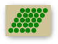
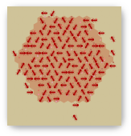
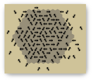
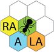

Contents
User Documentation
Introduction
Hello. Yes this is AntGame.
AntGame is a challenge of cunning and logic. Consider a world with a finite food supply scattered throughout. It is your task, as the player, to collect as much food as possible. In order to succeed in this goal, you wield an army of ants, whom you must carefully instruct in the ways of their world. Without you, they are nothing.
At the same time, another player has their own army of ants, who are trying to gather up the same limited food supply. The player with the most food at the end wins the game. Have you got what it takes to give your ants the competitive edge?
How to Play
When you load the game, you are greeted with the following screen: (you've probably already seen this)
Keep an eye on that white bar at the bottom. That's the breadcrumb trail. It tells you where you are and where you've been. You can use it to travel back up in the menu structure. Using your browser's back button will take you away from AntGame and we don't want that to happen so remember to use the breadcrumbs instead!
From this screen you can either start a single match or a contest. To do this, simply click the big blue button which corresponds to your choice of game type.
Rules
AntGame is fairly simple. Here are the rules:
- The team who gathers the most food wins.
- Food is counted as being "gathered" if it has been dropped on one of the team's home cells. Food that an ant is carrying is not counted, even if that ant is standing on a home cell.
- When an ant is adjacent to 5 or more enemy ants it dies, depositing 3 food particles in the cell it was in.
- At the start of the game, each home cell for a particular colour ant is populated with an ant of that colour facing east.
- Ants cannot move onto rocky cells.
There are also some rules concerning the formation of worlds.
Single Matches
The Single Match mode lets you select two brains, and play them against each other on one world.
The Single Match setup screen looks like this:
To choose which brains and which world to use, simply click the corresponding blue "pick" button.
You may have noticed that the brains are coloured red and black. This means that they will start in different places in the world, so if your brain doesn't perform particularly well, fear not! Try swapping the colours around and you may fare better.
Before you run the game, you can change some settings. Notice a text field with some numbers? That's the number of rounds or iterations that the game will last for. Be careful not to pick a number which is too low, or your ants might not have enough time to gather food! The maximum number of rounds is 999,999.
Another setting which you can change is whether or not the game runs with graphics. If you're strapped for time, running the game without graphics is much faster. Click the orange button to toggle graphics on and off.
To run the game, click the green "go" button. When the game is finished, you will be presented with a window showing the results of the match. It should look a bit like this:
As you can see, it shows how much food was gathered by each team and how many ants died on each team too.
Closing the results window takes you back to the single match setup screen.
Contests
The Contest mode lets you select two or more brains, and play them against each other on one or more contest-legal worlds.
The Contest setup screen looks like this:
To choose which brains and which worlds to use, simply click the corresponding blue "select" button. When you return to the contest setup screen, it should look something like this:
Notice that when you hover over a brain or a world, an orange button appears which allows you to dismiss that world or brain. (i.e. to exclude it from the contest).
When you are happy with the chosen components, you can click the green "go" button to go to the Contest Home screen, which looks like this:
From here you can inspect the current rankings of the brains. You can see which fixtures have been played, and which remain unplayed.
To run the entire contest sequentially, click the green "play all" button. When the contest is over, you will be returned to the contest home screen where you can see how the brains fared. If you cancel a match at any point during the contest, the results of any completed fixtures will be saved and you will be returned to the contest home screen where you can see the current statistics.
Alternatively, you can play fixtures individually. Do this by hovering over an unplayed fixture and clicking the blue "play" button that appears.
When viewing played fixtures, the name of the winning team is highlighted in red. Or, in the case of a draw, both team names are highlighted blue.

You can toggle graphics on and off from the contest home screen using the orange button at the top-right of the screen.
While the Game is Running
With Graphics
When you run the game with graphics enabled, you will be presented with a visual representation of the ant world. Something like this:
The dark grey cells are rocks.

The green circles are blobs of food. They change size depending on how much food is in the cell.
The Red Home cells are slightly red.
The Black Home cells are slightly black.
You have the ability to change the speed at which the game runs within the range 1-10. To do this, click the blue buttons in the top bar marked "+" (to increase speed) and "-" (to decrease speed).
You can cancel the game at any time by clicking the button marked "cancel". This will take you back to wherever you were before the game started.
Without Graphics
If you run the game without graphics, you are simply presented with a progress bar which indicates how much of the game has been completed. You have the option to cancel the game (by clicking the button marked "cancel") which will take you back to wherever you were before the game started.
The green circles are blobs of food.
Brains
How To Use Them
When asked to choose a brain or some brains, you are presented with the following screen:
On the left you see a list of available brains. On the right is shown the source code for the currently selected brain.
To choose a brain, simply click the green "use" button that appears when you hover over it in the list.
How To Add a New One
Brains can be added by clicking the blue "add" button shown in the screenshot above. A window will open that allows you to give your new brain a name, specify it's source code, and then compile it for use in AntGame. The window will look like this:
If your brain fails to compile, you will receive an alert stating the error in your code. You can then fix the error and try to compile again. If you change your mind about adding a new brain, click cancel at any time to return to the list of available brains.
If you've added a new brain, when you hover over it in the list of available brains, you will now have the option to delete it (the red button), or edit it (the yellow button).
If you choose to edit a brain, it works just like adding a new one except that when you recompile, it will overwrite the one you chose to edit.
How To Write Them
In AntGame, an ant is a simple state machine. That is to say, ants can only be in one state at any given time. Each state specifies some instruction which tells an ant what to do next.
Brains are, in that respect, an ordered series of states. States are numbered from 0 to n-1 where n is the total number of states in the brain.
Instructions for each state are written in a text file. Every line that contains an instruction represents a single state. You can't specify the number of a particular state. Rather, they are numbered implicitly by the order in which they appear in the file.
To begin, let's take a look at the full set of instructions our ants understand: (don't worry if you don't yet!)
| Instruction | Parameters | Description |
|---|---|---|
| Sense | sensedir st1 st2 cond | Go to state st1 if cond holds in sensedir and to state st2 otherwise. |
| Mark | i st | Set mark i in current cell and go to st. |
| Unmark | i st | Clear mark i in current cell and go to st. |
| PickUp | st1 st2 | Pick up food from current cell and go to st1; go to st2 if there is no food in the current cell. |
| Drop | st | Drop food in current cell and go to st. |
| Turn | lr st | Turn left or right and go to st. |
| Move | st1 st2 | Move forward and go to st1. Go to st2 if the cell ahead is blocked. |
| Flip | p st1 st2 | Choose a random number x from 0 to p-1; go to st1 if x=0 and st2 otherwise. |
Let me just explain those a bit more carefully...
-
Sense
Above we see the example as follows:
Sense sensedir st1 st2 condThere are a variety of different ways this can be used, for example:
Sense Ahead 1 3 FoodWould search to see if there is food directly in front of the ant, going to State 1 if there is, and going to State 3 if there isn't.
The options for sensedir are:
- Here (the cell the ant is currently occupying)
- Ahead (the cell directly ahead of the ant)
- LeftAhead
- RightAhead
An ant cannot sense behind the direction it is facing.
The options for cond are:
- Friend (a friendly ant)
- Foe (an enemy ant)
- FriendWithFood
- FoeWithFood
- Food
- Rock
- Marker i (where i is the type of marker)
- FoeMarker (Ants can only check if an enemy marker is present, they cannot detect white type of marker it is)
- Home (Friendly ant nest)
- FoeHome (Enemy ant nest)
-
Mark
Above we see:
Mark i stAn example use of this instruction would be:
Mark 0 3This would put a marker of type 0 (Markers can be of type 0-5) in the cell the ant is currently in, then move to state 3, markers are key to creating an advanced brain.
-
Unmark
This instruction is the opposite of the mark function. It removes the specified marker from the cell the ant is currently in. An example:
Unmark 3 0This would remove the marker of type 3 from the cell the ant is currently in, then move to state 0.
-
Pickup
Above we see:
Pickup st1 st2This will cause the ant to attempt to pick up food from the cell it is currently in. If the ant is successful, it will go to the state specified by st1. If there is no food in the current cell, then it will go to the state specified by st2
-
Drop
Above we see:
Drop stThis instruction causes an ant to drop food if it is carrying any. Regardless of whether any food was dropped, the ant will then go to the state specified by st.
-
Turn
Above we see:
Turn lr stThis instruction causes an ant to turn one step (60 degrees) in the direction specified by lr, and then go to the state specified by st.
The two possible values of lr are:
- Left
- Right
-
Move
Above we see:
Move st1 st2This instruction causes an ant to attempt to move one step in the direction it is facing. If the ant is successful, it will go to the state specified by st1. If the cell ahead is blocked for some reason, then it will go to the state specified by st2
. Be weary of using this instruction because, if an ant is successful in moving, they cannot do anything for the next 14 iterations the game! -
Flip
This instruction provides the ability to inject a degree of uncertainty into the actions of your ants.
Above we see:
Flip p st1 st2p is an integer with any value ≥ 0. This number gives a probability that the ant will end up in st1. The value of this probability is 1/p. (so if p has value 0 or 1, the ant will always go to st1). Otherwise, the ant will go to st2.
To illustrate:
Flip 3 1 7This gives the ant a 1 in 3 chance of going to state 1 and, therefore, a 2 in 3 chance of going to state 7.
Notes
Brain code is case-insensitive.
The code can also be commented using a semicolon to delimit the start of a comment. Anything which follows a semicolon until the end of the line is ignored by the compiler. To illustrate this, have a look at the example code below.
An Example Brain
To conclude, we will look at a complete (but simple) brain. This brain has been commented to help you understand what is going on. If you want to look at a completed brain in correct syntax, please look at one of the sample brains provided in the game, you can look at these by selecting "Single Match" "Pick" Then highlighting the brain you want to view the source code for.
Sense Ahead 1 3 Food ; state 0: [SEARCH] is there food in front of me? Move 2 0 ; state 1: YES: move onto food (return to state 0 on failure) PickUp 8 0 ; state 2: pick up food and jump to state 8 (or 0 on failure) Flip 3 4 5 ; state 3: NO: choose whether to... Turn Left 0 ; state 4: turn left and return to state 0 Flip 2 6 7 ; state 5: ... or ... Turn Right 0 ; state 6: turn right and return to state 0 Move 0 3 ; state 7: ... or move forward and return to state 0 (or 3 on failure) Sense Ahead 9 11 Home ; state 8: [GO HOME] is the cell in front of me my anthill? Move 10 8 ; state 9: YES: move onto anthill Drop 0 ; state 10: drop food and return to searching Flip 3 12 13 ; state 11: NO: choose whether to... Turn Left 8 ; state 12: turn left and return to state 8 Flip 2 14 15 ; state 13: ...or... Turn Right 8 ; state 14: turn right and return to state 8 Move 8 11 ; state 15: ...or move forward and return to state 8
More complicated brains would have functions for finding enemy ants and killing them, protecting the colony, potentially even raiding the enemy colony.
Worlds
In AntGame, worlds are 2D hexagonal grids. You can make your own, or generate random ones on-the-fly.
Worlds consist of four types of cells:
- Rock
- Clear
- Red Home
- Black Home
How To Use Them
When asked to choose a world or some worlds, you are presented with the following screen:
On the left you see a list of available worlds. On the right is shown the thumbnail for the currently selected world.
To choose a world, simply click the green "use" button that appears when you hover over it in the list.
To generate random contest-legal worlds, click the green "generate" button.
How To Add a New One
Worlds can be added by clicking the blue "add" button shown in the screenshot above. A window will open that allows you to give your new world a name, specify it's source code, and then compile it for use in AntGame. The window will look like this:
If your world fails to compile, you will receive an alert stating the error in your code. You can then fix the error and try to compile again. If you change your mind about adding a new world, click cancel at any time to return to the list of available worlds.
If you've added a new world, when you hover over it in the list of available worlds, you will now have the option to delete it (the red button), or edit it (the yellow button).
If you choose to edit a world, it works just like adding a new one except that when you recompile, it will overwrite the one you chose to edit.
How To Write Them
Like brains, worlds are written in a text file.
The first two lines of the text file must contain an integer each (and nothing else). These integers specify the width and the height of the world respectively.
The following lines represent the hexagonal grid of the world. Cells are defined as single characters. The possible characters are:
- # - Rock
- . - Clear Cell
- + - Red Hill
- - - Black Hill
- [n] - A number between 1 and 9 which denotes a clear cell containing n food particles.
Each line of the grid must contain exactly the number of characters as specified by the width of the world on the first line. There must also be exactly the number of grid lines as specified by the height of the world on the second line.
The characters in the grid are separated by spaces. Even-numbered lines (if we say that the first line of the file is line 1) have an extra space at the front.
Let's take a look at an example:
10 10 # # # # # # # # # # # 9 9 . . . . 3 3 # # 9 # . - - - - - # # . # - - - - - - # # . . 5 - - - - - # # + + + + + 5 . . # # + + + + + + # . # # + + + + + . # 9 # # 3 3 . . . . 9 9 # # # # # # # # # # #
Restrictions
All worlds must conform to the following rules:
- The perimeter of the world must be entirely rocky cells.
- There must be at least one home cell for each colour of ant.
- There must be at least one food particle in the world.
In order for a world to be used in a contest, it must conform to the following additional rules:
- The worlds must have width and height 150.
- There must be 2 ant homes which must be hexagons with sides length 7.
- Food must be arranged in 'blobs' shaped as parallelograms with sides length 5, where each cell contains 5 particles of food.
- There must be 11 food blobs.
- There must be 14 separate rocky areas.
- Non-food elements must not be directly adjacent to each other.